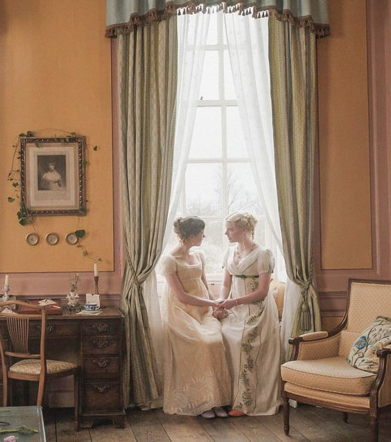

|  |
Main Characters
- Emma Woodhouse
- The protagonist of the novel, Emma Woodhouse is the rich, beautiful, and privileged mistress of Hartfield.
- Mr. George Knightley
- The long-time friend and trusted confidante of the Woodhouses, Emma’s brother-in-law. Mr. Knightley is a true gentleman in lineage, estate, and virtue.
- Frank Churchill
- Mr. Weston’s son and Mrs. Weston’s stepson. Raised by his aunt and uncle in Enscombe, Frank is anticipated as a suitor for Emma, though his real love is Jane.
- Jane Fairfax
- Miss Bates’s niece and Mrs. Bates’s granddaughter. As another accomplished and beautiful young woman of similar age, Jane incites Emma’s jealousy and admiration.
Minor Characters In The Order of Appearance
- Harriet Smith
- Mrs. Weston
- Mr. Weston
- Mr. Elton
- Mr. Robert Martin
- Miss Bates
- Mrs. Bates
List of the Themes
- Social Class
- Marriage
- Gender Limitations
- Misperception
- Pride and Vanity
|